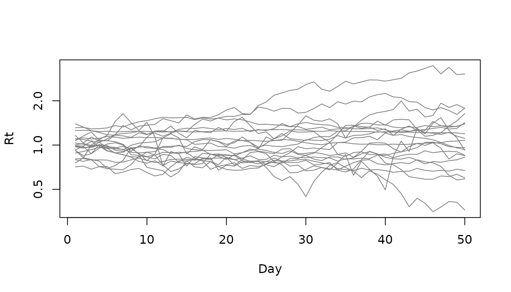
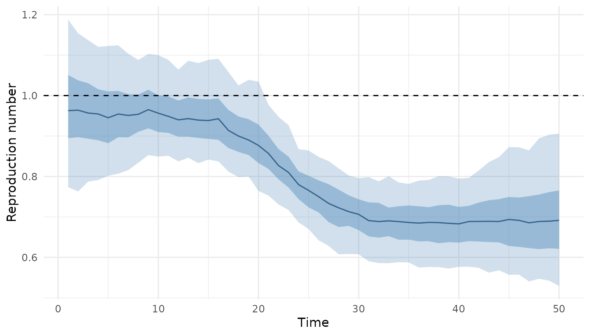
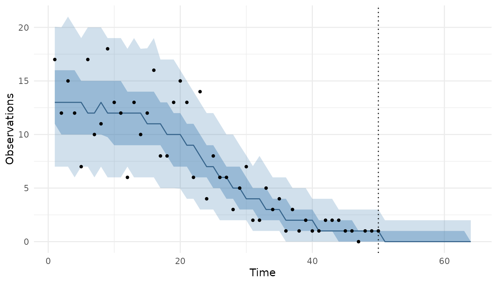

vignettes/composableIDModelR.Rmd
composableIDModelR.RmdcomposableIDModelR builds infectious disease models from interchangeable parts and runs them with ComposableTuringIDModels.jl in Julia. A model has two parts:
Every part has an R constructor with the same name and arguments as its Julia counterpart, so the ComposableTuringIDModels.jl documentation applies directly.
library(composableIDModelR)
#>
#> Attaching package: 'composableIDModelR'
#> The following object is masked from 'package:stats':
#>
#> GammacomposableIDModelR needs Julia (>= 1.12), the version its pinned dependencies were resolved with, ideally installed with juliaup. The Julia packages are installed and loaded the first time a model is simulated or fitted, which can take several minutes. To follow progress, run the setup yourself:
To run MCMC chains in parallel, set JULIA_NUM_THREADS
before Julia starts:
Sys.setenv(JULIA_NUM_THREADS = "4")Distributions come from distspec, so they can be given by their natural parameters or by a mean and standard deviation.
latent <- RandomWalk(
init = Normal(0, 0.25),
epsilon_t = HierarchicalNormal(std = HalfNormal(0.05))
)
infection <- Renewal(
generation_time = Gamma(shape = 6.5, scale = 0.62),
rt = latent,
initialisation = Normal(log(10), 0.5)
)
observation <- NegativeBinomialError(cluster_factor = HalfNormal(0.1))
model <- IDModel(infection, observation)
model
#> <composableIDModelR model component>
#> IDModel(
#> Renewal(;
#> generation_time = Gamma(6.5, 0.62),
#> rt = RandomWalk(;
#> init = Normal(0.0, 0.25),
#> ϵ_t = HierarchicalNormal(; std = HalfNormal(0.05))
#> ),
#> initialisation = Normal(2.3025850929940459, 0.5)
#> ),
#> NegativeBinomialError(; cluster_factor = HalfNormal(0.1))
#> )Building a model does not start Julia. The printout is the Julia code
the model runs, which you can also get as a string with
as_julia(). Arguments left out use the Julia defaults.
simulate() draws parameters from their priors and
simulates the latent process, infections and observations. Each quantity
is returned as a matrix with one row per simulation.
sims <- simulate(model, nsim = 20, n = 50, seed = 1)
#> Starting Julia ...
names(sims)
#> [1] "generated_y_t" "expected_y_t" "I_t" "Z_t"
#> [5] "Rt"
matplot(t(sims$Rt), type = "l", lty = 1, col = "grey50", log = "y",
xlab = "Day", ylab = "Rt")
Prior simulations are a quick check that the priors produce plausible epidemics before fitting.
We fit the model to one of the simulated series. nuts()
sets up the sampler; short chains keep this example fast.
y <- sims$generated_y_t[1, ]
fitted <- fit(
model, y,
method = nuts(draws = 250, warmup = 250, chains = 2),
seed = 2
)
fitted
#> <composableIDModelR fit>
#> Model:
#> IDModel(
#> Renewal(;
#> generation_time = Gamma(6.5, 0.62),
#> rt = RandomWalk(;
#> init = Normal(0.0, 0.25),
#> ϵ_t = HierarchicalNormal(; std = HalfNormal(0.05))
#> ),
#> initialisation = Normal(2.3025850929940459, 0.5)
#> ),
#> NegativeBinomialError(; cluster_factor = HalfNormal(0.1))
#> )
#>
#> Data: 50 time points
#> Sampling: 2 chains of 250 draws after 250 warmup
#> Warning: The ESS has been capped to avoid unstable estimates.
#> Warning: The ESS has been capped to avoid unstable estimates.
#>
#> Convergence:
#> Max Rhat: 1.03
#> Min bulk ESS: 247
#> Divergent transitions: 6
#>
#> Use summary() for parameter estimates and plot() to visualise.summary() gives posterior summaries of the parameters,
and the draws work with the posterior package and anything
built on it, such as bayesplot.
summary(fitted)
#> Warning: The ESS has been capped to avoid unstable estimates.
#> Warning: The ESS has been capped to avoid unstable estimates.
#> # A tibble: 53 × 10
#> variable mean median sd mad q5 q95 rhat ess_bulk ess_tail
#> <chr> <dbl> <dbl> <dbl> <dbl> <dbl> <dbl> <dbl> <dbl> <dbl>
#> 1 rw_init -0.0371 -0.0380 0.133 0.120 -0.257 0.172 1.000 247. 190.
#> 2 std 0.0578 0.0553 0.0222 0.0222 0.0276 0.0967 1.01 305. 401.
#> 3 ϵ_t[1] -0.0984 -0.103 0.968 0.902 -1.76 1.47 0.997 633. 401.
#> 4 ϵ_t[2] -0.0540 -0.0291 0.961 0.953 -1.67 1.46 1.00 668. 456.
#> 5 ϵ_t[3] -0.0973 -0.0914 0.989 0.973 -1.74 1.46 1.01 621. 370.
#> 6 ϵ_t[4] -0.0838 -0.0459 0.948 0.966 -1.69 1.43 1.01 680. 339.
#> 7 ϵ_t[5] 0.149 0.148 0.883 0.810 -1.26 1.56 1.01 717. 371.
#> 8 ϵ_t[6] -0.0613 -0.0356 0.899 0.840 -1.54 1.46 0.999 951. 408.
#> 9 ϵ_t[7] 0.0581 0.0794 0.890 0.866 -1.47 1.55 1.00 872. 333.
#> 10 ϵ_t[8] 0.160 0.106 0.924 0.897 -1.49 1.68 1.00 544. 383.
#> # ℹ 43 more rowsGenerated quantities (the latent process Z_t, infections
I_t, expected and predicted observations, and
Rt for renewal models) are matrices with one row per
posterior draw:
str(fitted$generated)
#> List of 6
#> $ generated_y_t: num [1:500, 1:50] 17 17 17 17 17 17 17 17 17 17 ...
#> $ expected_y_t : num [1:500, 1:50] 12.5 14.5 14.1 16.2 13 ...
#> $ I_t : num [1:500, 1:50] 12.5 14.5 14.1 16.2 13 ...
#> $ Z_t : num [1:500, 1:50] 0.08125 0.05237 -0.25554 0.00514 -0.08308 ...
#> $ predicted_y_t: num [1:500, 1:50] 10 8 13 12 17 11 12 14 13 13 ...
#> $ Rt : num [1:500, 1:50] 1.085 1.054 0.774 1.005 0.92 ...
plot(fitted, type = "Rt")
type = "cases" compares posterior predictions with the
data, and horizon adds a forecast, which continues the
latent process beyond the data.
plot(fitted, type = "cases", horizon = 14)
The forecast draws themselves come from predict():
Changing an assumption means replacing one part. Here observations follow a delay from infection and are Poisson distributed, and the reproduction number follows an AR(1) process:
IDModel(
Renewal(
generation_time = Gamma(shape = 6.5, scale = 0.62),
rt = AR(damp = truncated(Normal(0.9, 0.05), 0, 1)),
initialisation = Normal(log(10), 0.5)
),
LatentDelay(PoissonError(), delay = LogNormal(1.6, 0.42))
)
#> <composableIDModelR model component>
#> IDModel(
#> Renewal(;
#> generation_time = Gamma(6.5, 0.62),
#> rt = AR(; damp = truncated(Normal(0.9, 0.05), 0.0, 1.0)),
#> initialisation = Normal(2.3025850929940459, 0.5)
#> ),
#> LatentDelay(PoissonError(), LogNormal(1.6, 0.42))
#> )component() constructs any Julia component by name, and
julia() inserts Julia code verbatim, for example a function
argument. Positional R arguments become positional Julia arguments and
named ones become keyword arguments.
IDModel(
DirectInfections(
Z = component("HilbertSpaceGP", role = "latent"),
initialisation = Normal(log(100), 1)
),
LatentDelay(PoissonError(), delay = component("Frechet", 3, 2,
role = "distribution"))
)
#> <composableIDModelR model component>
#> IDModel(
#> DirectInfections(;
#> Z = HilbertSpaceGP(),
#> initialisation = Normal(4.6051701859880918, 1.0)
#> ),
#> LatentDelay(PoissonError(), Frechet(3.0, 2.0))
#> )The Mishra et al. (2020) case study applies these steps to COVID-19 data from South Korea.